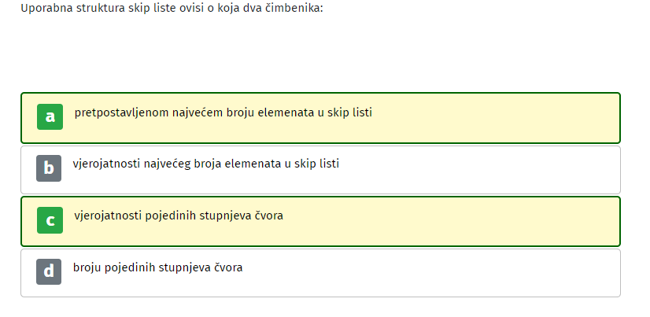
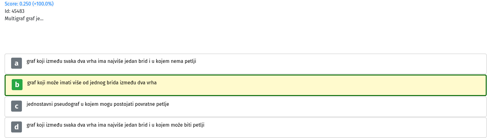
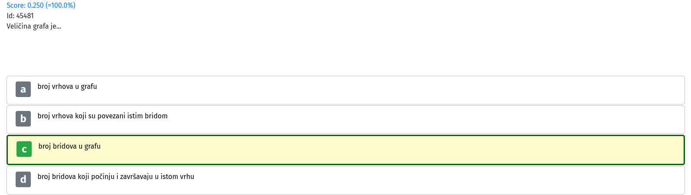
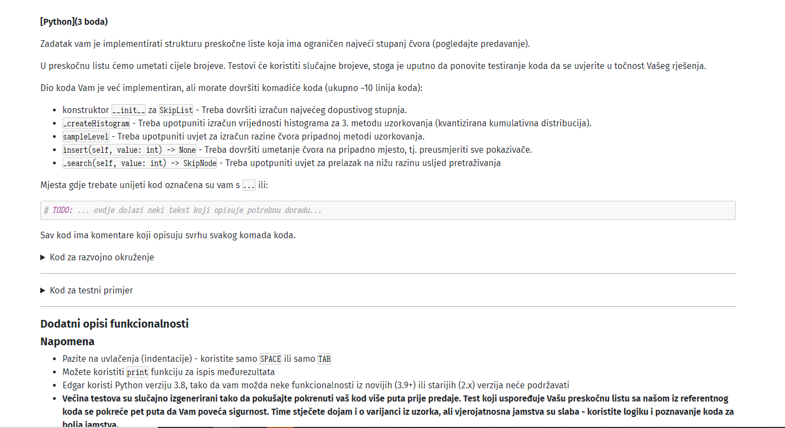

FERonja ja sam samo prebacila dict u array, onda radi kod iz skripte, i nazad u dict finalni rezultat.
labos danas u 10: zadatak BellmanFord blic se ponovila 2, nova 2 su  
Stigle preskočne liste 
Sta sa tim bellmanom, dal treba vratit listu bellmanford node-ova ili listu indexa, jer mi za jedno rade jedni testovi, a za drugo drugi…
steker jel itko skuzio ovo? imam isti problem
labos u 1: Bellman-Ford blic ponovljen
reygrep Ovo je moj završni PI
{'a': {'a': None, 'b': 'a', 'c': 'b', 'd': 'b'}, 'b': {'a': 'c', 'b': None, 'c': 'b', 'd': 'b'}, 'c': {'a': 'c', 'b': 'a', 'c': None, 'd': 'b'}, 'd': {'a': 'd', 'b': 'a', 'c': 'b', 'd': None}}
kod od preskocnih listi
gdje je TODO to treba napravit
MOD EDIT: isto kao aerius
BigZ1 Već je gore poslano kaj me cimas
Dragi prijatelj strojnog učenja ako sam dobro shvatio kad postavljas prev varijablu nemoj ju postavljat na prethodni čvor nego na indeks prethodnog čvora
sheriffHorsey hvala, do toga je bilo
Krasno kada nestane neta u domu pa moraš u kafić da radiš labos… Ugl. labos u 8, pitanja već viđena kao i zadatak iz skip listi.
također, pitanja iz pitalica su se već pojavila, a zadatak WFI implementirati (gore je netko sliku stavio)
Marko218 ima netko mozda rjesenje?
IdeGas https://ferhr-my.sharepoint.com/:u:/g/personal/ms52059_fer_hr/EW3BHZpq6_ZLgntSV7Q1_j4BVCz7IDeeCRzDAkHiXwSfvA?e=GGbCVr Evo rješenja za BF i WFI koje sam jučer pripremio za copy paste ali kako mi zadaci nisu došli možda će nekom biti od koristi. Kod možda nije najjasniji i radi na onim testnim primjerima što su oni dali, ali nisam siguran prolaze li sve njihove testove na edgaru.
Kasno Marko na Kosovo stiže Ali hvala, nedama se da ce nekome drugom pomoc 😃
u 12 bellman ford
itko uspio rijesiti ovaj dio u insertu sa skip listama?
Matt kako su ovi labosi iz naspa predobri. Likovi napišu u komentaru da prev mora biti BellmanFordNode, a onda se kao očekuje da to ipak bude int hahahahaha.